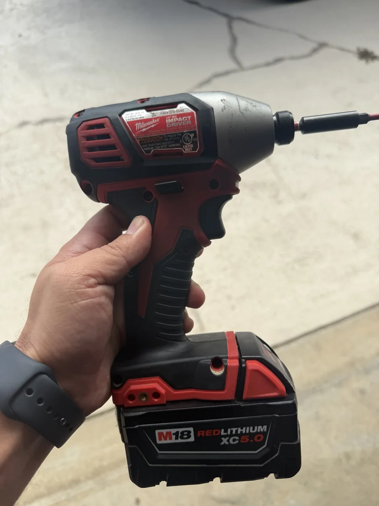
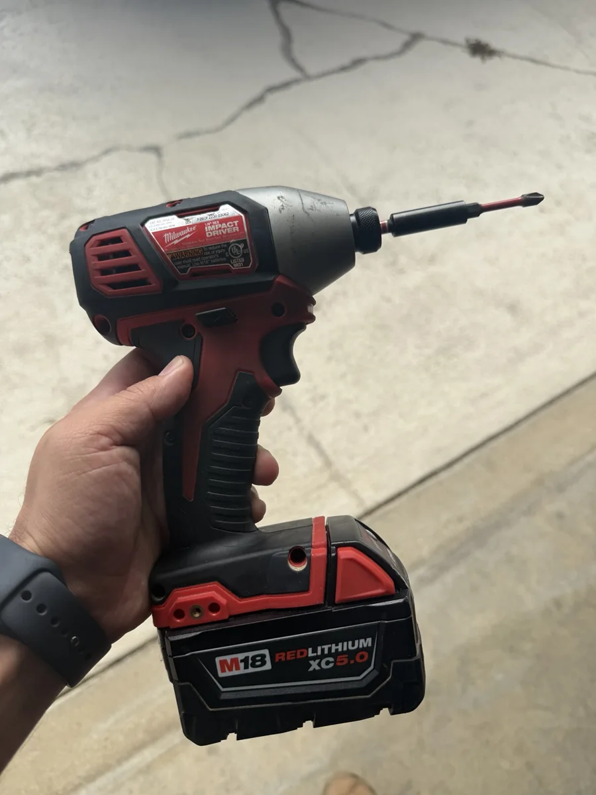

Affiliate disclosure: As an Amazon Associate, Saturday Gear Co. earns from qualifying purchases at no extra cost to you. The combo-kit recommendations are research-based. The separately identified Milwaukee 2656-20 is personally owned and used; none of these three kits is claimed as tested.
Three battery-platform paths, depending on your projects
You have decided whether you need both tools. Now choose the platform around batteries you already own, budget, frequency of use and the next tools you will actually buy. These are different buying paths, not a universal winner or a hands-on three-kit comparison.
Milwaukee M18 Compact Brushless 2-Tool Combo Kit — 3692-22CT
Best for: frequent DIY projects and buyers planning to build an M18 cordless-tool collection. Milwaukee is our owner's personal preference, informed by real M18 use; this specific combo has not been personally tested.
Strengths: compact brushless drill and impact driver, with two CP2.0 batteries, a charger and a bag. The kit includes a 3601-20 drill/driver and 3650-20 impact driver.
Tradeoffs: a premium-platform buying path may cost more than an occasional user needs. This compact kit is not an M18 FUEL kit, and its drill/driver is not a hammer drill. Small batteries keep the tools manageable but are not a reason to assume long runtime with future saws or outdoor equipment.
Battery platform: M18 compatibility is a practical reason to stay with Milwaukee when you already own the batteries. Check the battery needs of each future tool; M12 is a separate battery system.
See Milwaukee 3692-22CT specificationsManufacturer link; not an affiliate link. The pictured owner tool below is the older 2656-20, not this kit's 3650-20.
DEWALT 20V MAX Brushless Drill / Impact Driver Combo Kit — DCK277D2
Best for: homeowners who want a versatile two-tool starting point, particularly if future purchases fit the 20V MAX system.
Strengths: a brushless DCD777 drill/driver and DCF787 impact driver, two 2.0Ah batteries, charger and contractor bag. Compare the total kit cost and available tools in the platform rather than buying a brand name alone.
Tradeoffs: this is a specific established kit, not a claim that it is DEWALT's newest or highest-output combination. Its drill is a drill/driver, not a hammer drill. Buyers doing demanding daily work should compare the exact tool features they need rather than assuming every yellow combo is equivalent.
Battery platform: check 20V MAX compatibility on each planned purchase; DEWALT's other voltage systems are not automatically interchangeable. The 20V MAX label describes maximum initial voltage; nominal voltage is 18V, so it does not by itself prove an advantage over an 18V competitor.
Experience label: research-based recommendation. We have not personally tested DCK277D2.
View DEWALT DCK277D2 on AmazonAffiliate link. Confirm DCK277D2, included batteries, seller, current price and warranty before ordering.
RYOBI ONE+ 18V Drill / Impact Driver Combo Kit — PCL1200K2
Best for: household repairs and buyers prioritizing a practical entry kit plus a wide selection of ONE+ tools.
Strengths: a drill/driver and impact driver with two 1.5Ah batteries, charger and bag. The ONE+ platform gives an occasional DIY buyer room to add tools without choosing a professional-oriented kit for every job.
Tradeoffs: this is a basic kit, not the ONE+ HP brushless range. Compare motor type, controls and the exact next tool you need if you expect frequent demanding work. Small included batteries are convenient for light work but do not establish runtime for a future saw or yard tool.
Battery platform: verify ONE+ 18V compatibility; RYOBI 40V outdoor equipment uses a separate system. The most economical route may be staying with usable batteries you already own, even when another kit is advertised as a value choice.
Experience label: research-based recommendation. We have not personally tested PCL1200K2.
View RYOBI PCL1200K2 on AmazonAffiliate link. Confirm PCL1200K2, included batteries, seller and warranty before ordering. The marketplace title is abbreviated; check the model details rather than the title alone.
The Milwaukee impact driver we actually use
Owner-used: Milwaukee M18 1/4-inch Hex Impact Driver, 2656-20. “It's a tank.” Our owner says it works great and has had zero issues. That real experience is one reason he generally prefers Milwaukee tools. He also owns a Milwaukee circular saw, chainsaw and string trimmer; their model numbers and detailed performance are not part of this comparison.
That endorsement applies to his 2656-20, not the newer 3692-22CT combo above. It does not automatically make Milwaukee the right purchase for every homeowner or establish a measured durability advantage over DEWALT or RYOBI.


How the two tools work
A drill/driver turns a chuck smoothly and usually has adjustable clutch settings for fastening. The chuck accepts a range of round or hex-shank bits within its capacity. Drilling mode bypasses the fastening clutch on many models; follow the exact tool’s instructions.
An impact driver adds rotational impacts when resistance builds. Most homeowner models use a 1/4-inch hex quick-change holder. That makes them useful for repeated or demanding fastening, but the impacts can be too aggressive for fragile hardware. It is not the same tool as a hammer drill, which adds a different action for appropriate masonry drilling.
Choose by the job in front of you
| Job | Start with | Why / what to watch |
|---|---|---|
| Holes in wood or metal | Drill/driver | Better general bit compatibility and control. Select the bit and speed for the material; secure the work. |
| Furniture assembly and small screws | Drill/driver at a low clutch setting, then hand finish when needed | Avoid stripping threads or crushing particleboard. An impact is easy to overdo here. |
| Repeated deck screws | Impact driver, with a drill for pilot holes when required | Fast bit changes and rotational impacts help with repeated driving. Follow the screw maker’s installation instructions. |
| Lag screws or structural fasteners | Tool allowed by the fastener instructions | An impact may help, but pilot-hole, embedment and installation requirements control. More torque does not excuse an incorrect fastener. |
| Masonry holes | Suitable hammer drill or rotary hammer | A normal impact driver is not a substitute for the required drilling action and bits. |
| Automotive wheel nuts | Correct impact wrench when appropriate, plus a torque wrench for final tightening | A hex impact driver is not the usual wheel-service tool. Verify the vehicle torque specification and socket requirements. |
Does a homeowner actually need both?
If your jobs are occasional repairs, furniture and small holes, start with a drill/driver. It can drill and drive; a clutch helps control fastening. You can buy an impact later when the workload justifies it.
If you regularly build, repair fencing or drive lots of long screws, the pair is convenient. Leave a pilot bit in the drill and a driver bit in the impact instead of swapping accessories every few minutes. That workflow can be more useful than choosing the highest torque number available.
Can an impact driver drill holes?
Some can, with compatible hex-shank bits and within their instructions. That does not make them the best first tool for general drilling. Bit selection, control and the material matter. Do not force an accessory into an incompatible holder or assume every hex bit is suitable for impact use.
Impact driver vs. impact wrench
The usual impact driver has a hex holder for screw-driving bits. An impact wrench typically has a square drive for sockets and suits different fastening jobs. An adapter does not turn a small driver into an equivalent wheel-service wrench. For critical fasteners, follow the required installation procedure and verify final torque with the proper tool.
Is a drill-and-impact combo kit worth buying?
A combo can be a sensible route if you already need both tools. Compare what is actually in the box, not just the tool count:
- Tools: identify the exact models and whether the drill has the features your work needs.
- Batteries: check quantity, capacity, weight and compatibility within the chosen platform.
- Charger: confirm one is included; a bare-tool price may omit both battery and charger.
- Handling: a compact kit may be easier for cabinets and overhead work than the largest option.
- Next purchases: compare the other tools and battery costs you are realistically likely to buy.
Do not assume batteries interchange across DeWalt, Milwaukee, Ryobi or Makita, or even across every product carrying the same brand name. Verify the exact battery system. This article does not rank those manufacturers or recommend an unverified kit listing.
Brushless and voltage labels come after the basic choice
Motor type, tool size and battery system deserve a separate comparison. They do not change the basic division: drill for versatile drilling and controlled fastening; impact for demanding repetitive driving. A label alone is not evidence that a tool suits your hand, budget or next project.
Build a useful garage setup
Buy for the work you actually do. A capable drill, the right bits and careful technique can cover many ordinary repairs. Add an impact when repeated fastening makes it worthwhile. For cleanup afterward, compare shop-vac capacity for homeowner and garage jobs and airflow vs. suction specifications. If you are considering pneumatic equipment instead, read air-compressor sizing. Find the related buying paths in Garage gear guides.
Sources and editorial limits
Sources checked October 2, 2026: DEWALT drill/driver operating manual · DEWALT impact-driver operating manual.
Read our editorial policy and affiliate disclosure. Browse all gear guides.
Combo-kit references checked October 2, 2026: Milwaukee 3692-22CT · DEWALT manufacturer DCK277D2 specifications · RYOBI PCL1200K2. Confirm current specifications before purchase.